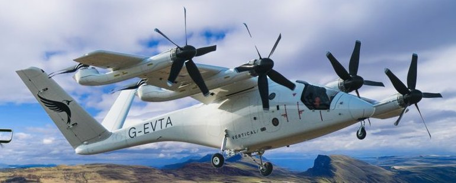
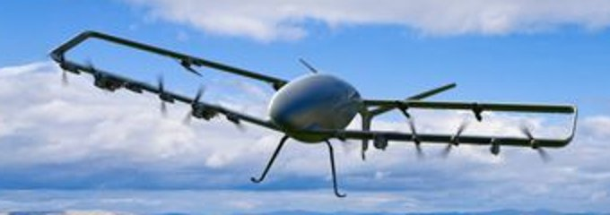
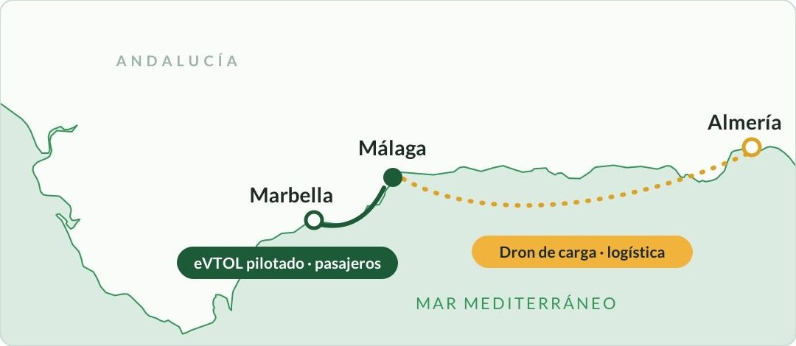

Oct
22
Jueves · 2026
✓Celebrado
Un espacio público para conocer cómo y cuándo llegarán los taxis aéreos eléctricos y los drones de carga de gran envergadura, y qué falta para que operen con normalidad.

La movilidad aérea innovadora (IAM, por sus siglas en inglés) reúne las operaciones que hacen posibles las aeronaves eléctricas de despegue y aterrizaje vertical y los drones de gran tamaño.
En el caso de Málaga hablamos de dos usos muy concretos: el transporte de pasajeros con aeronaves eléctricas pilotadas (eVTOL) y el transporte de carga a media y larga distancia con drones cargueros de gran envergadura.
Las aeronaves ya vuelan en ensayos. El reto que queda es integrarlas de forma segura en el espacio aéreo actual, junto a aviones, helicópteros y el resto de usuarios, con normas, procedimientos y servicios que todavía se están definiendo.
Estimaciones recogidas en el resumen del proyecto VERTI-GO (septiembre de 2026).
Propulsión eléctrica e híbrida, automatización de cabina y estaciones de control en tierra.
Certificación de aeronaves, reglas de vuelo, U-space y vertipuertos.
Ruido, seguridad, utilidad real y aceptación por parte de la ciudadanía.
Previsiones realistas para la llegada al servicio comercial.
Un eVTOL es una aeronave eléctrica que despega y aterriza en vertical como un helicóptero y vuela en crucero como un avión. Es mucho más silenciosa y no emite gases durante el vuelo.
El corredor de pasajeros une el aeropuerto de Málaga (LEMG) con el helipuerto de Puerto Banús, en Marbella, por una ruta costera de unos 60 km. En ruta se reservan y liberan zonas de aterrizaje de contingencia. Un segundo caso parte del aeródromo del Aeroclub de Málaga (LEAX) y coordina la aproximación visual con el tráfico comercial del aeropuerto.
VERTI-GO prevé los vuelos de prueba del Valo en 2028–29. Vertical Aerospace prevé certificarlo en 2028 y empezar los vuelos comerciales con pasajeros en 2030–31.

Hoy, la única aeronave eVTOL tripulada fabricada en Europa.
Los drones de carga de gran envergadura pueden mover mercancía a media y larga distancia sin piloto a bordo, controlados desde una estación en tierra.
El corredor logístico une los puertos de Málaga y Almería. Allí se ensayarán operaciones de categoría específica de riesgo medio-alto (SAIL III–IV), con acceso a U-space dentro de espacio aéreo controlado y el concepto de torre remota digital.
Los ensayos SAIL IV están previstos para 2028. Según las estimaciones del proyecto, cada corredor de este tipo evitaría unos 3.500 viajes de camión al año en 2031.

VERTI-GO es una Acción de Innovación de Horizonte Europa financiada por la Empresa Común SESAR 3. Dura 36 meses (junio 2026 – mayo 2029), está coordinada por Honeywell y cuenta con unos 5 millones de euros de financiación europea. Su objetivo es integrar con seguridad las nuevas aeronaves en el ATM y el U-space actuales, junto al resto de usuarios del espacio aéreo.

Solución 1 · Operaciones tripuladas bajo reglas de vuelo visual (VFR). Planificación de vuelo digital, reserva de vertipuertos y de zonas de aterrizaje de contingencia, y automatización de los servicios de control. Culmina con vuelos reales del Valo entre Málaga y Marbella. Lidera ITG.
Solución 2 · Ecosistema ATM y U-space bajo reglas de vuelo instrumental (IFR). Operaciones de carga pilotadas a distancia con el Laila en el corredor Almería–Málaga, acceso al U-space en espacio aéreo controlado, torre remota digital y simulaciones del área terminal de Londres. Lidera Honeywell.
Los resultados alimentarán la normativa y los estándares europeos e internacionales (EASA, EUROCAE, OACI) y la hoja de ruta del U-space.


El proyecto VERTI-GO ha recibido financiación de la Empresa Común SESAR 3 en virtud del Acuerdo de Subvención n.º 101287356, en el marco del programa de investigación e innovación Horizonte Europa de la Unión Europea.
El foro irá contando cada paso del camino con encuentros públicos. Fabricantes, operadores de infraestructura, administraciones y centros de investigación se sientan en la misma mesa.
Presentación del proyecto europeo VERTI-GO, del eVTOL Valo (Vertical Aerospace) y del dron de carga Laila (Odys Aviation), y dos paneles: movilidad aérea urbana y logística aérea con drones.
Iremos anunciando las siguientes actividades del foro a medida que avance el proyecto.
Ver todas las actividades